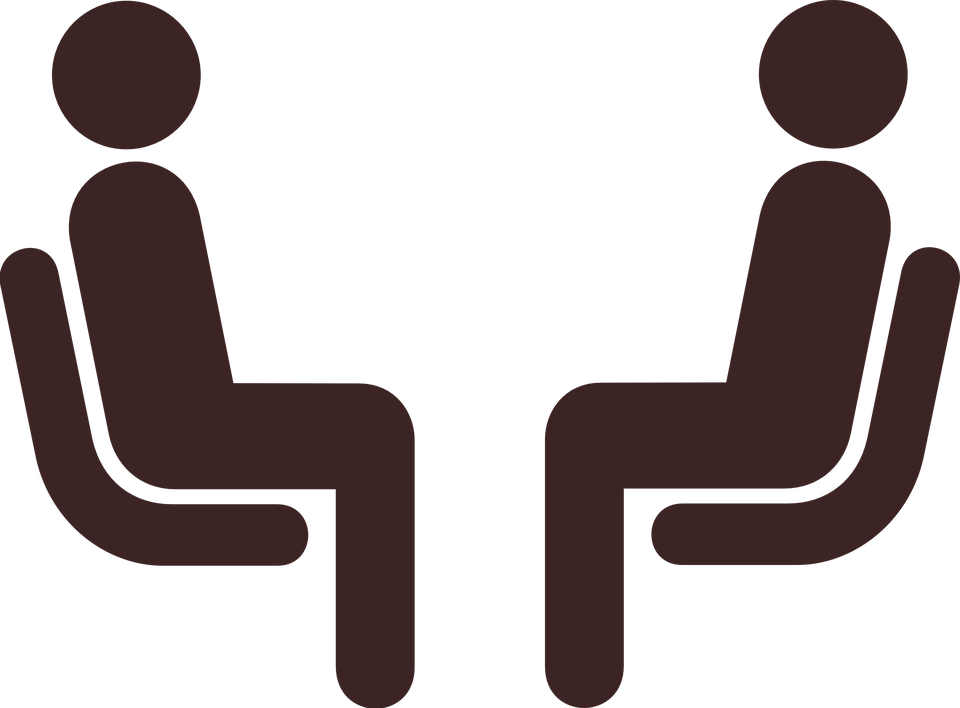
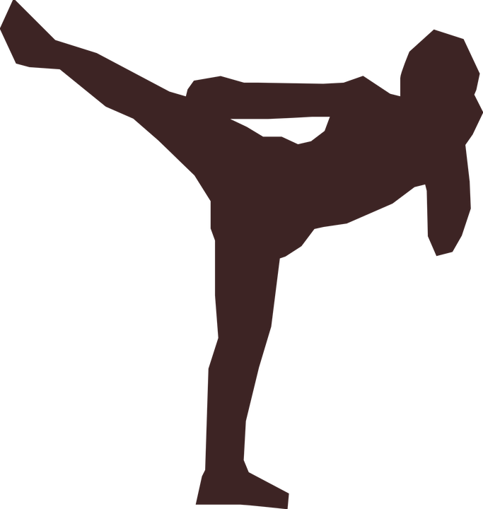

29 ans
Formation developpeur web fullstack JS
"Du chaos nait une etoile - Charles Chaplin"
C'est apres differentes experiences dans le tourisme, l’environnement journalistique, celui des enfants, l’evenementiel, puis la realisation que la vie est faite d’apprentissages divers et varies, que je n’ai de domaine de predilection et que l’environnement et les circonstances de travail m’inspirent davantage
 